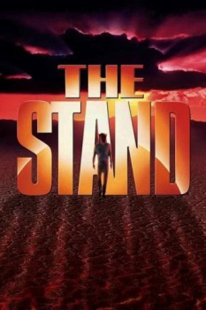

The Stand (1994)


Country:United States, 366 minutes
Spoken languages:English
Genres:Horror, Fantasy, Sci-Fi
Director(s):Doug Liman
Writer(s):Stephen King
Video Codec:Unknown
Number: 3328
IMDb Rating:

Certification:PG
Storyline:
A miniseries adaptation of Stephen King’s ambitious story of good and evil, set in a near-future America decimated by an apocalyptic virus and following dozens of characters in overlapping storylines running over many years.
Cast:
Gary Sinise, Rob Lowe, Molly Ringwald, Jamey Sheridan, Corin Nemec
Medium: Media file,
Location: D:\Stephen King's The Stand\The Stand (1994) part4 Special Edition DVDrip H264 AAC V3nDetta {PURE RG}.mp4
Loaned: No
Aspect ratio: Unknown